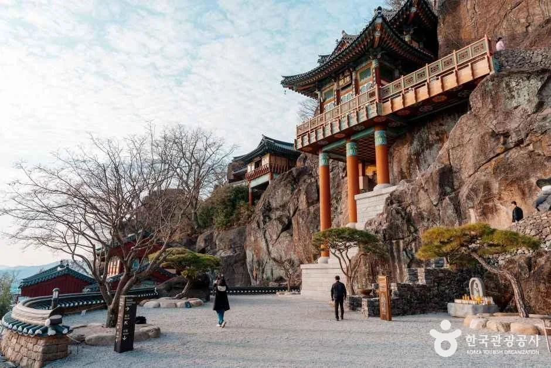
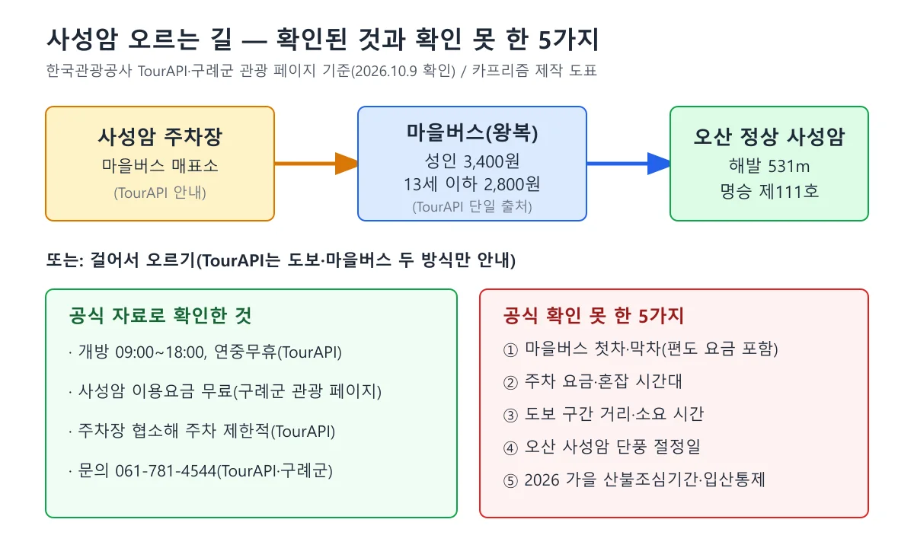
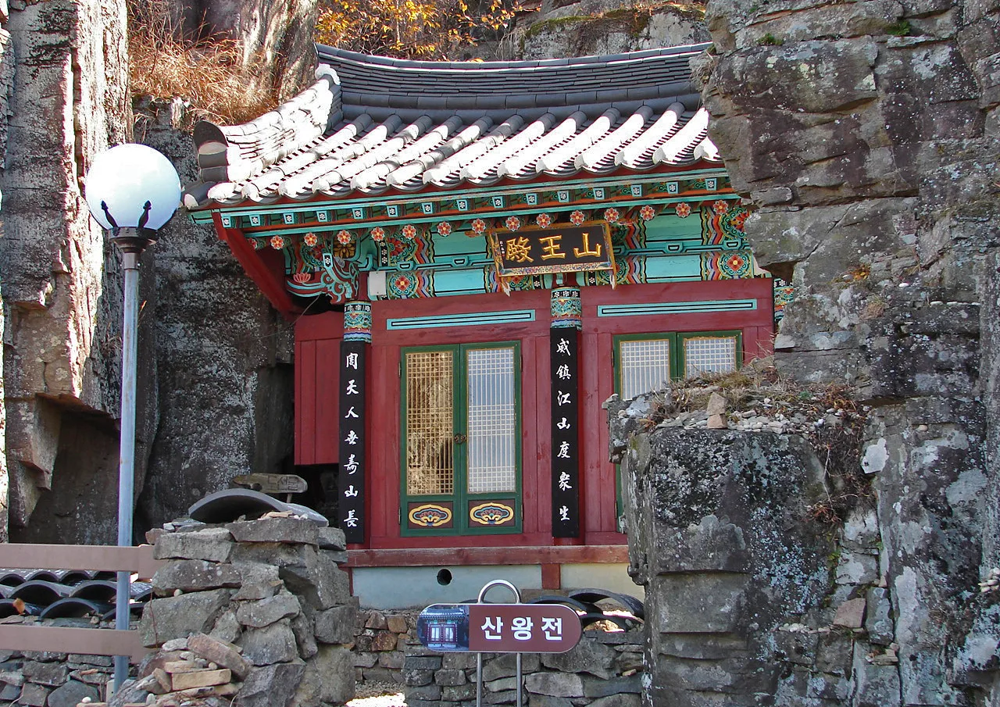
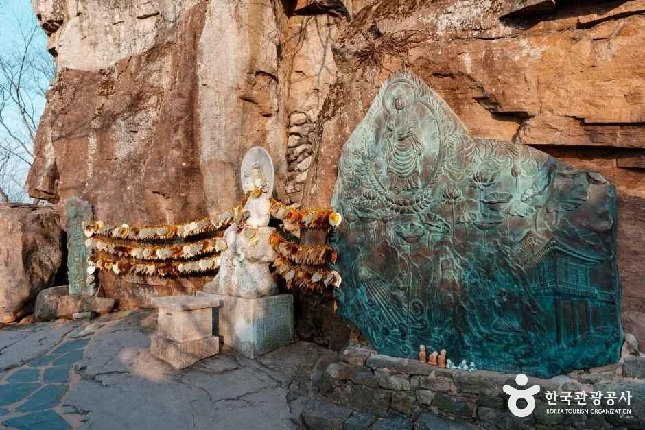
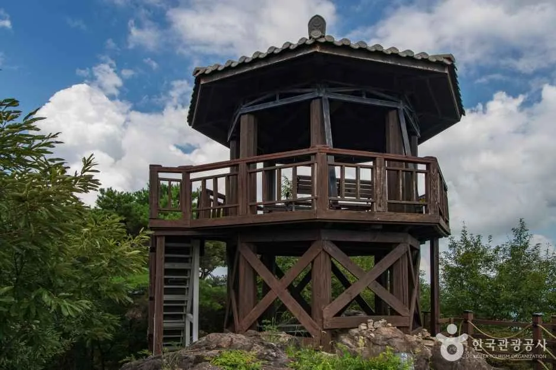
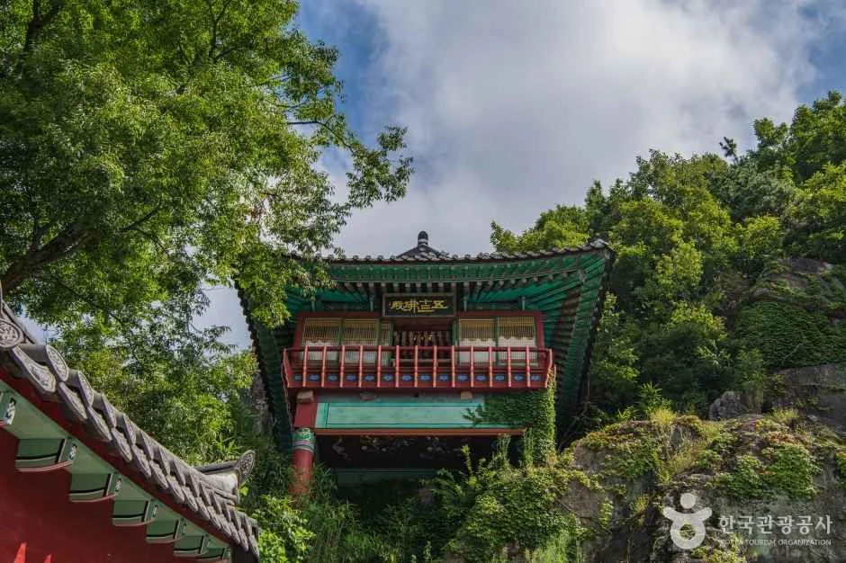
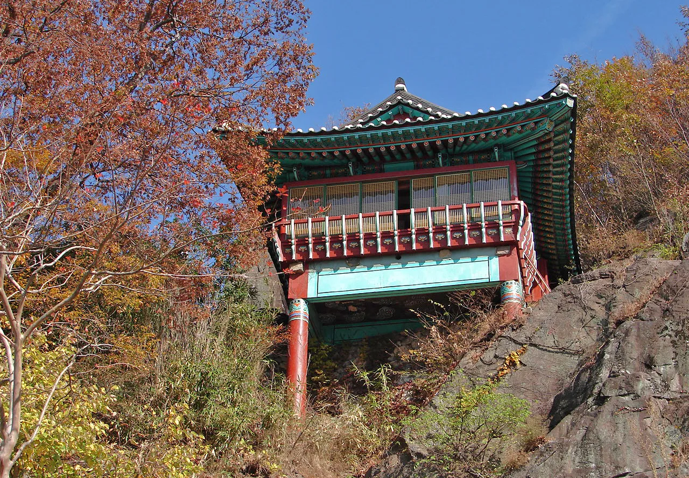
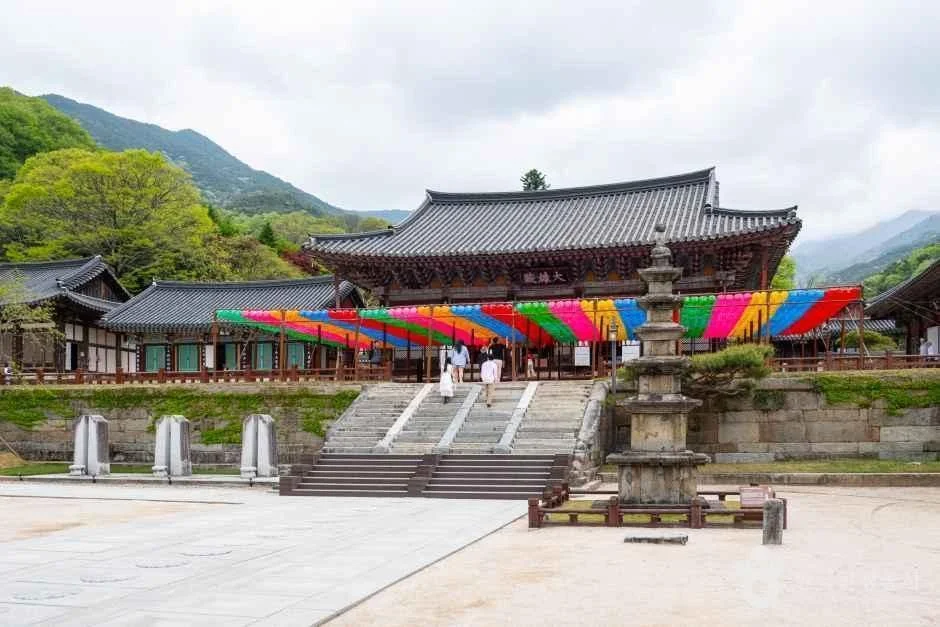
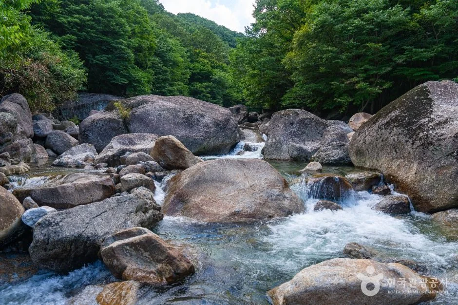

▲ 오산 암벽 위에 얹힌 전각(약사전, TourAPI는 유리광전 병기). 2011년 10월 31일 촬영한 사진으로, 올해 단풍 상태를 뜻하지 않는다. ⓒ Steve46814 / Wikimedia Commons (CC BY-SA 3.0)
"올라가는 데 3,400원, 보는 건 무료라던데 정말일까?" 구례 오산 정상의 사성암은 해발 531m 암벽 위에 약사전이 걸린 사찰이다. 구례군 관광 페이지는 이용요금을 "무료", 개방을 "연중무휴"로 안내하고, 한국관광공사 TourAPI는 관람 시간을 09:00~18:00, 마을버스 요금을 왕복 3,400원(13세 이하 2,800원)으로 싣고 있다. 제목의 3,400원은 사성암 입장료가 아니라 TourAPI 개요에만 나오는 마을버스 왕복 성인 요금이고, "무료"는 구례군 관광 페이지의 사성암 이용요금 표기다. 서로 다른 출처의 값이라 둘을 이어 읽으면 오해가 생긴다. 이 글은 두 공식 자료를 2026년 10월 9일 기준으로 직접 열어 대조해 접근 방법, 비용, 볼거리, 단풍과 산불철 주의점을 정리했다. 마을버스 첫차·막차 시각, 주차 요금, 도보 구간 거리처럼 공식 자료에서 찾지 못한 항목은 추정하지 않고 "확인하지 못했다"로 남겼다. 같은 구례의 화엄사 단풍 기사와는 접근 방식과 풍경이 달라 비교표로 구분했다.
1. 한눈에 보기 — 위치·시간·비용
TourAPI 기본 정보는 2026년 6월 30일 수정된 것으로 표시돼 있고, 구례군 관광 페이지의 주소 표기와 같다. 다만 구례군 관광 페이지 하단의 최종 수정일은 2024년 3월 11일이라, 이용요금 "무료" 표기가 그 뒤에 바뀌었는지는 페이지만으로 알 수 없다. 행정구역 명칭이 "전남광주통합특별시 구례군"으로 바뀐 점이 눈에 띈다. 사성암은 구례읍에서 약 2km 남쪽 죽마리 오산 꼭대기에 있다고 TourAPI는 설명한다.
| 항목 | 내용 | 출처 |
|---|---|---|
| 주소 | 전남광주통합특별시 구례군 문척면 사성암길 303 | 구례군 관광 페이지·TourAPI |
| 개방 | 연중무휴, 09:00~18:00 | 구례군(연중무휴)·TourAPI(시간) |
| 이용요금 | 무료(구례군 관광 페이지의 이용요금 항목, 페이지 최종수정 2024.3.11) | 구례군 관광 페이지 |
| 마을버스 | 왕복 성인 3,400원, 13세 이하 2,800원(이 값은 TourAPI 개요에만 있음) | TourAPI 개요 |
| 주차 | 가능하지만 주차장이 협소해 주차가 제한적 | TourAPI |
| 문의 | 061-781-4544 | 구례군·TourAPI |
| 지정 | 2014년 명승 제111호, 오산 정상 해발 531m | 구례군 관광 페이지 |
| 편의시설 | 장애인화장실·장애인주차장·화장실 있음, 유모차·휠체어 대여와 수유실 없음 | 구례군 관광 페이지 |
| 출입 제한 | 반려동물 출입 안 됨, 자전거·인라인·킥보드 출입 금지 | 구례군 관광 페이지 |
ℹ️ 공식 안내 바로가기
구례군 관광 페이지의 사성암 소개와 항공 VR은 구례군 누리집에서 볼 수 있다. 구례군 사성암 페이지 바로가기 한국관광공사 정보는 대한민국 구석구석에서 확인할 수 있다. 대한민국 구석구석 바로가기

▲ 암벽에 붙은 약사전과 경내 광장. 한국관광공사 사성암 항목 사진으로 촬영 계절은 확인하지 못했다. 사진=한국관광공사
2. 오르는 길 — 주차·마을버스·도보
TourAPI는 사성암을 "차로 이동이 가능하지만 주차장이 협소해 주차가 제한적"이라고 설명하고, 가는 방법으로 걸어 올라가는 것과 마을버스를 타고 올라가는 것 두 가지를 적었다. 마을버스는 "사성암 주차장 마을버스 매표소"나 운행사(안전운수)를 검색해 찾아가면 된다고 안내한다. 두 가지 외에 공식 자료가 전하는 정보는 요금뿐이다. 편도 요금, 첫차·막차 시각, 배차 간격은 구례군 관광 페이지와 TourAPI 어느 쪽에도 없고, 구례군청 누리집과 마을버스 운영 주체의 공지도 검색으로 찾지 못했다. 검색에 걸린 여행 매체 소개글 중에는 하행 막차를 17:30으로 적은 곳이 있었지만 원문을 열어 확인하지 못했고 운영 주체의 공지도 아니어서 수치로 쓰지 않는다. 관람 시간이 18:00까지로 안내돼 있으므로, 올라가기 전에 내려오는 막차 시각을 확인하는 것이 안전하다는 점만 분명하다.

▲ TourAPI와 구례군 관광 페이지 기준으로 정리한 접근 도표. 파란 칸이 마을버스 요금이다. 카프리즘 제작 도표
| 수단 | 확인된 내용 | 확인 못한 내용 |
|---|---|---|
| 마을버스 | 왕복 성인 3,400원·13세 이하 2,800원, 사성암 주차장의 마을버스 매표소 | 편도 요금, 첫차·막차, 배차 간격, 정원 |
| 도보 | 걸어 올라가는 방법이 있다(TourAPI) | 거리·소요 시간·경사도 |
| 자차(정상부) | 차로 이동 가능하나 주차장 협소(TourAPI) | 주차 요금·수용 대수·혼잡 시간대 |
| 대중교통 | — | 구례 시내에서 사성암까지 버스 노선(공식 확인 못 함) |
✅ 올라가기 전 3가지
· 관람 종료 18:00 — 내려오는 마을버스 막차 시각을 문의처(061-781-4544)에 확인
· 주차장이 협소하다는 공식 설명이 있으므로 주말 오전 이른 시간대 여부는 문의해서 확인
· 장애인주차장은 있으나 유모차 대여는 없음(구례군)
3. 오산 정상에서 볼 것 — 약사전·마애여래입상·섬진강 조망
구례군 관광 페이지는 사성암을 "기암절벽에 지어진 독특한 건축"으로 소개한다. 백제 성왕 22년(544년) 연기조사가 건립했다고 전해지고, 오산암으로 불리다가 의상대사·원효대사·도선국사·진각선사 네 고승이 수도해 사성암이 됐다는 설명이다. 높이 20m 암벽에 독특한 건축기법으로 지은 약사전이 한눈에 들어오고, 약사전 건물 내 암벽에는 원효대사가 손톱으로 새겼다는 전설이 전하는 마애여래입상이 있다. 정상에서는 굽이치는 섬진강과 넓은 평야, 그 너머 지리산 연봉이 보인다는 것이 군의 설명이다. 구례군은 문화재 항목에 "구례 사성암 마애여래입상"과 "구례 오산 사성암 일원"을 올려 두었다.
▲ 절벽 위에 얹힌 약사전 전각. 한국관광공사 사성암 항목 사진으로 촬영 계절은 확인하지 못했다. 사진=한국관광공사

▲ 암벽 아래 현판에 '산왕전'(山王殿)이라 적힌 작은 전각. 2011년 10월 31일 촬영한 사진이다. ⓒ Steve46814 / Wikimedia Commons (CC BY-SA 3.0)

▲ 암벽 앞에 불상과 청동 부조가 놓인 경내 한쪽. 마애여래입상 자체인지는 확인하지 못했다. 사진=한국관광공사
▲ 전각 난간 너머로 내려다보는 섬진강과 산 능선. 한국관광공사 사성암 항목 사진이며 시간대와 계절은 확인하지 못했다. 사진=한국관광공사
▲ 높은 곳에서 내려다본 구례 평야와 강줄기. 사성암 항목 사진으로 촬영 위치는 확인하지 못했다. 사진=한국관광공사

▲ 경내 숲 사이의 2층 목조 정자. 한국관광공사 사성암 항목 사진이다. 사진=한국관광공사

▲ 나무 사이로 보이는 푸른 기와 지붕 전각. 사성암 항목 사진이며 촬영 계절은 확인하지 못했다. 사진=한국관광공사
▲ 오산 비탈 위 건물들과 멀리 보이는 평야. 한국관광공사 사성암 항목 사진이다. 사진=한국관광공사
4. 단풍은 언제? — 공식 예측에는 오산이 없다
가을 일정을 잡을 때 가장 조심할 부분이다. 산림청이 9월 22일 낸 '2026년 한반도 단풍절정 예측지도'는 산별 지점 값이며, 카프리즘 단풍 주말표 기사가 지도에서 읽은 지리산(전북·전남·경남) 절정 예측일은 10월 27일이다. 하지만 지리산 값은 지리산 지점의 값일 뿐 오산 사성암의 값이 아니다. 오산 사성암에 대한 별도 절정일은 이번 확인에서 공식 자료로 찾지 못했다. 구례군 관광 페이지에는 "사성암의 봄·여름·가을·겨울" 계절 사진 탭이 있지만 절정 시기는 적혀 있지 않다. 그래서 이 글은 사성암 단풍 날짜를 적지 않는다. 아래 사진은 2011년 10월 31일 오산의 모습으로, 단풍이 든 해가 있었다는 참고일 뿐 올해 날짜를 뜻하지 않는다.

▲ 단풍 든 나무 사이로 올려다본 암벽 위 전각. 2011년 10월 31일 촬영한 사진이며 올해 절정 시기와는 무관하다. ⓒ Steve46814 / Wikimedia Commons (CC BY-SA 3.0)
지도 전체 읽는 법은 산림청 지도 기사에서 다뤘다.
5. 화엄사와 하루에 묶을까, 나눌까
같은 구례의 화엄사는 산 아래 경내를 걷는 사찰이고, 사성암은 오산 정상의 암벽 사찰이다. 화엄사 입장·주차·단풍 정보는 구례 화엄사 단풍 기행에 정리돼 있어 아래 표에서 비교만 한다. 두 곳 사이 이동 시간은 공식 자료로 확인하지 못했다.
| 구분 | 화엄사 | 사성암 |
|---|---|---|
| 주소(TourAPI) | 마산면 화엄사로 539 | 문척면 사성암길 303 |
| 성격 | 산 아래 경내를 걷는 사찰 | 해발 531m 오산 정상, 암벽 위 약사전 |
| 입장 | 무료(카프리즘 화엄사 기사 기준) | 무료(구례군 관광 페이지 이용요금 항목) |
| 주차 | 2026년 1월부터 전면 무료(카프리즘 화엄사 기사 기준) | 주차장 협소, 요금 확인 못 함 |
| 이동 | 경내 도보 | 마을버스(왕복 3,400원) 또는 도보 |
| 단풍 시기 | 기사별 통상 시기 안내 | 공식 예측 확인 못 함 |

▲ 화엄사 경내. 한국관광공사 화엄사 항목 사진으로 촬영 계절은 확인하지 못했다. 사성암과는 다른 장소다. 사진=한국관광공사

▲ 피아골계곡의 바위와 계류. 한국관광공사 피아골계곡 항목 사진으로 단풍철 사진이 아니다. 사진=한국관광공사
한국관광공사 TourAPI에는 피아골계곡(토지면 내서리)과 구례 운조루 고택(토지면 운조루길 59)도 구례 관광지로 올라 있다. 지리산 쪽 일정을 이어 보려면 지리산둘레길 산청 코스 기사도 참고할 만하다. 이동 시간과 개방 정보는 이 글에서 확인하지 못했다.
6. 안전과 산불철 입산 — 날짜는 아직 확인 못 했다
사성암은 암벽 위 사찰이라는 구조상 계단과 비탈이 이어진다는 점은 구례군 설명(암벽과 계단으로 이어지는 건물들)에서도 짐작되지만, 낙석·경사로 구간에 대한 공식 안전 공지는 확인하지 못했다. 산불철 입산 제한도 마찬가지다. 산림청의 가을철 산불조심기간은 2025년에 10월 20일부터 12월 15일까지 57일간으로 공고됐다(산림청 공고 제2025-338호, 농림축산식품부가 2025년 10월 27일 게시). 2026년 기간 공고는 10월 9일 다시 검색했지만 찾지 못했다. 산불조심기간과 입산통제는 같은 제도가 아니라서, 날짜 구분은 단풍철에 닫히는 길 기사에서 정리했다. 구례군이 사성암 방면에 입산통제를 지정했는지는 공식 자료로 확인하지 못했다.
| 항목 | 상태 |
|---|---|
| 2026 가을철 산불조심기간 | 공식 공고 확인 못 함(2025년은 10월 20일~12월 15일, 공고 제2025-338호) |
| 사성암 방면 입산통제 지정 | 확인 못 함 |
| 낙석·경사로 안전 공지 | 확인 못 함 |
| 장애인 편의 | 장애인화장실·장애인주차장 있음(구례군) |
7. 출발 전 체크리스트
공식 자료로 확정된 값은 개방 09:00~18:00 연중무휴, 이용요금 무료(구례군), 마을버스 왕복 3,400원(13세 이하 2,800원, TourAPI)이다. 아래 5가지는 전화로 확인하는 편이 낫다. 문의처는 061-781-4544다. 단풍철 도로 단속은 갓길 주차 단속 기사를, 호남 쪽 다른 단풍 코스는 호남·충청 가을 길 기사를 참고할 수 있다.
| 확인 항목 | 이유 |
|---|---|
| 1. 마을버스 첫차·막차, 편도 요금 | 공식 자료에 왕복 요금만 있음 |
| 2. 주차 요금·혼잡 시간대 | 주차장 협소 외 공식 정보 없음 |
| 3. 도보 구간 거리·소요 시간 | 공식 자료에 수치 없음 |
| 4. 오산 사성암 단풍 절정일 | 산림청 지도에 지리산 지점 값만 있고 오산 값은 없음 |
| 5. 2026 가을 산불조심기간·입산통제(낙석 안전 공지 포함) | 공식 공고·공지 확인 못 함 |
8. 정리
구례 사성암은 해발 531m 오산 정상의 명승 제111호로, 09:00~18:00 연중무휴에 구례군 관광 페이지 기준 이용요금은 무료다. 마을버스는 왕복 성인 3,400원, 13세 이하 2,800원이고 정상부 주차장은 협소해 주차가 제한적이라고 한국관광공사가 안내한다. 걸어 올라가는 방법도 있다.
제목의 확인 못 한 5가지, 곧 마을버스 첫·막차, 주차 요금, 도보 거리, 오산 사성암의 단풍 절정 예측, 2026 가을 산불조심기간·입산통제는 공식 자료로 확인하지 못했다. 화엄사와는 접근 방식이 달라 따로 일정을 잡는 편이 낫고, 출발 전 061-781-4544에 문의하자.